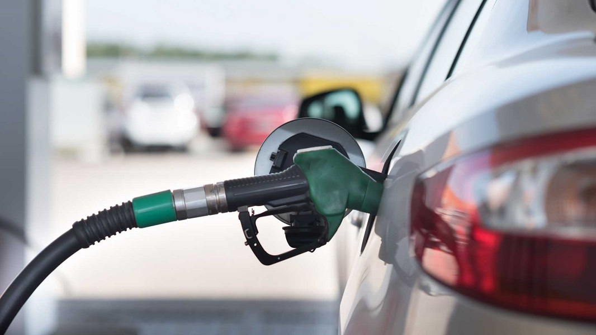
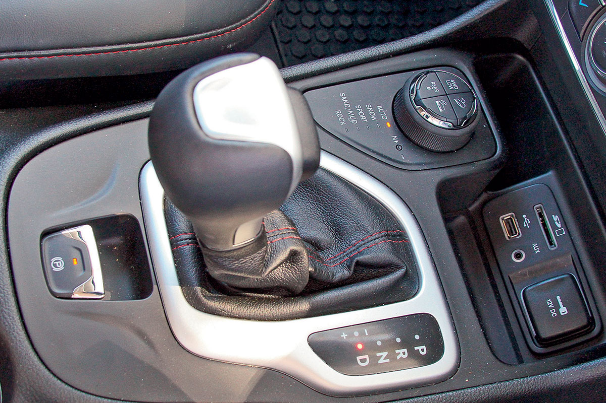

Car Information Sheet
This article will explain the differences between the fuel types, e.g Diesel, Gasoline, and LPG, of cars that is available in the market. Another topic that will be discussed is the similarities and differences of the transmissions of cars specifically, manual and automatic cars, how the technology evolved over time.
Fuel Types
A fuel is any material that can be made to react with other substances so that it releases energy as heat energy or to be used for work. The concept was originally applied solely to those materials capable of releasing chemical energy but has since also been applied to other sources of heat energy such as nuclear energy (via nuclear fission and nuclear fusion).
The heat energy released by reactions of fuels is converted into mechanical energy via a heat engine. Other times the heat itself is valued for warmth, cooking, or industrial processes, as well as the illumination that comes with combustion. Fuels are also used in the cells of organisms in a process known as cellular respiration, where organic molecules are oxidized to release usable energy. Hydrocarbons and related oxygen-containing molecules are by far the most common source of fuel used by humans, but other substances, including radioactive metals, are also utilized.
Fuels are contrasted with other substances or devices storing potential energy, such as those that directly release electrical energy (such as batteries and capacitors) or mechanical energy (such as flywheels, springs, compressed air, or water in a reservoir).
Diesel
Diesel fuel, which is syrup-like compared to watery gasoline, packs more of a punch in terms of energy per unit of weight than gasoline (say, per gallon or liter). Even though it often costs more than gasoline, it contains more potential energy, so less diesel is required in terms of fuel to accomplish the same amount of work (in this case, driving distance) as gasoline. That’s why diesel cars tend to get mileage in the 30s, 40s, or 50s — or more — depending on the engine and vehicle type. In terms of fuel comparative costs, it’s either a wash or a slight advantage for either fuel, depending on the price difference, vehicle, and driving style. But overall, the final cost for using either fuel over time is going to be nearly the same. The output of gasoline and diesel engines is measured in terms of horsepower and torque. Horsepower is a measure of power, while torque is a measure of an engine’s twisting force on the driveline. Big amounts of both are great, but if you have a lot of horsepower with only a little torque, your vehicle is going to be slow to get going. It’s torque that gets things moving, which is why diesel engines are used in big trucks; they are great for moving heavy loads because they have so much torque. But diesel engines don’t rev up very high, so they make less horsepower on average than gas engines, which is why there aren’t many sports cars with diesel engines. Because diesel engines use compression ignition, which can quickly ruin a gas engine, they’re built tough. And because they come from a workhorse heritage, they tend to be reliable and require little care. This used to translate into a ton of weight, but with modern manufacturing methods, the weight penalty for a diesel engine has been greatly reduced and the engine’s weights are now generally on par with gas engines.
Gasoline
While diesel engines continue to build a reputation of struggling with emissions, they actually have highly impressive fuel economy numbers in comparison to their gasoline counterparts. Indeed, diesel engines are significantly more efficient in most cases, especially when the throttle pedal is only partially depressed. Much of this is due to differences in the strokes described above, in combination with the self-ignition temperature. The self-ignition temperature is the temperature at which an air-fuel ratio will combust simply from heat alone. In gasoline engines, it is critically important that the self-ignition temperature is never reached during the compression stroke, as this would cause combustion to occur before the spark plug fires, potentially destroying the engine. As a result, gasoline engines have relatively low compression ratios (the amount the air and fuel is squeezed down during the compression stroke), because compression causes a rise in temperature. As diesel engines do not have fuel in the mixture during the intake stroke, they can compress the air much more, exceeding the diesel fuel’s self-ignition temperature. Higher compression ratios equate to higher efficiency, so diesel engines take advantage of this by injecting fuel into the air after it is compressed.
LPG
The term LPG actually encompasses more than one type of gas. There are a number of hydrocarbon gases that fall into the category of LPG. Their common characteristic is that they can be compressed into liquid at relatively low pressures. The two most common are Propane and Butane.
- LPG (Propane) - A Propane-Butane mix is the gas that is supplied to virtually all homes and most businesses that purchase LPG in NZ. LPG is supplied in gas bottles that are either exchanged or refilled on site by LPG tankers. LPG goes by a number of names in NZ including LPG, LPG gas, bottled gas, BBQ gas, camping gas and LP gas. It’s all the same gas. The chemical formula for Propane is C3H8.
- LPG (Butane) - Butane is supplied to certain businesses that specify Butane, as opposed to Propane. Butane has some specific applications where it has advantages over Propane. These include greenhouse applications and use as a propellant in aerosols. The chemical formula for Butane is C4H10.
- Autogas (Propane/Butane mix) - Autogas that is sold at NZ petrol stations is typically a Propane/Butane mix. Not only is running an LPG car economical, but Autogas is also cleaner burning fuel than petrol, so engine life is actually extended and greenhouse gas emissions reduced.
Conclusion
At atmospheric pressure, LPG is a gas, and has to be compressed in order to keep as a liquid, while the other two are liquids. All three are products of distilling crude, among others like naphtha. Petrol has a lower vapor point compared to diesel and is well suited to ignite in an air mix using a spark. Diesel doesn't vaporize quite so readily and needs to be injected into compressed air that is already hot. Diesel has higher calorific output, but slower flame travel, which explains why diesel engines have high fuel efficiency, but in basic configurations, cannot provide high acceleration, while petrol burns quicker, but releases less heat, which explains why petrol engines accelerate faster, hit higher revolutions, but aren't very fuel efficient. LPG is a cleaner burning fuel compared to the above two, but releases even lesser heat than petrol when burnt in a car's engine for example.
Car Transmission Types
Starting from the basics, the transmission in your vehicle is what applies the power that is created by your engine to move the vehicle forward. Your transmission controls the power that goes to the wheels, determining what speed you drive at. There are two main components to a transmission; the shaft, and the gears. The shaft is the part that takes the energy from the engine to help your vehicle move, while the gears help to determine the range of speed you can reach.
The key difference between these two transmission models is that a manual transmission requires you to do more work when the vehicle is in motion. A manual transmission allows you to physically shift the vehicle into different gears (hence the word “manual”), using a clutch pedal and shift knob. In order to move your vehicle forward and reach higher speeds, you have to manually shift gears to get to your desired speed. An automatic transmission, on the other hand, does the grunt work for you, changing gears fluidly as you push on the gas pedal.
While it sounds like a manual transmission is more of a pain than anything, causing you to have to do more work while driving, there are some benefits to choosing a manual transmission over an automatic. Manual transmissions give you more control over the vehicle, they tend to be less expensive, can get better fuel economy estimates and it can be fun!
Automatic
Automatic transmissions have been eclipsing their older manual cousins for the past few years. Yet, despite their apparent popularity, automatic transmissions are not necessarily a better choice for many drivers. However, they do offer advantages over manual transmissions in several key areas. For example, they are…
- Easier to use - Although there’s nothing inherently difficult about shifting gears and working a clutch, it still takes a bit of practice before most drivers are comfortable learning to use each of their limbs independently in order to control a manual transmission vehicle. Automatic transmissions, by comparison, are much simpler and take drivers significantly less time to learn.
- Less manually restrictive - Most new drivers are taught that the safest way to drive is to keep both hands firmly on the wheel at all times. This is possible when driving an automatic transmission vehicle, but is not possible with a manual transmission.
- Better for hilly areas - If you’re a less experienced driver, you may find that navigating steep inclines in a manual transmission is difficult, especially if you’re attempting to do so from a dead stop. Automatic transmissions take care of this issue, enabling your car to operate efficiently no matter how steep the hill might be.
- Greatly reduced risk of stalling - There are few things more embarrassing and awkward than accidentally stalling your vehicle right when the traffic light changes. This isn’t a common problem for those driving automatic transmission, where stalling will only occur if there’s a mechanical problem in the vehicle.
- Easier to use in heavy traffic - Overall, more work goes into starting, accelerating, decelerating, and stopping manual transmissions. This isn’t normally a problem, but in heavy traffic where a car isn’t able to get up to speed, drivers may notice that the constant starting and stopping becomes a difficult chore. Automatic transmissions allow the driver to move through heavy traffic without having to do more than push a single pedal.
Manual
For those drivers who prefer to be more involved in the inner workings of their vehicle, the manual transmission delegates the shifting of engine gears back to the pilot. Manual transmissions predate the newer automatic models, yet they are still favoured by many drivers due to the fact that they’re…
- Less expensive to purchase - If you’re car shopping on a budget, then there’s really no contest between the manual and the automatic. On average, a manual transmission will cost you about a thousand dollars less than an automatic of the same model.
- Cheaper to maintain - With all of the added machinery that goes into the automatic transmission, it can end up costing you big bikkies just to keep it running properly. Manual transmission cars require very little maintenance, and generally maintenance and repairs end up being significantly less costly. Be warned, however, because one thing that a manual has that the automatic doesn’t have to worry about is the clutch, and if that thing quits on you, then you could be in trouble.
- Better fuel efficiency - Overall, manual transmission engines are less complex, weigh less, and have more gears than automatics. The end result is that you’ll end up getting more kilometres out of the petrol you pump in than you would with an automatic. Manual transmissions have been known to save drivers between 5% and 15% on their fuel costs.
- Less likely to be stolen - With the increasing number of automatic transmissions finding their way onto roads, there’s an entire generation that has never learned the finer points of manual transmission operation. This means that should a car-thief decide to give your car a closer inspection in preparation for stealing it, there’s a fairly good chance that simply having a manual transmission will be enough to deter the criminal.
- Better control - Automatic transmissions are designed to choose the best gear for any situation, but they tend to err on the side of caution, shifting to too high of a gear and wasting engine power. At the same time, they are built to respond to conditions as they are encountered, which doesn’t allow for drivers to either anticipate an oncoming condition, or to purposely select a lower gear for an added boost of power. Manual transmissions give drivers greater control over the vehicle.
Conclusion
Basically, automatic transmissions are easier to use and more comfortable for the driver, while manual transmission vehicles are less expensive and more involved.